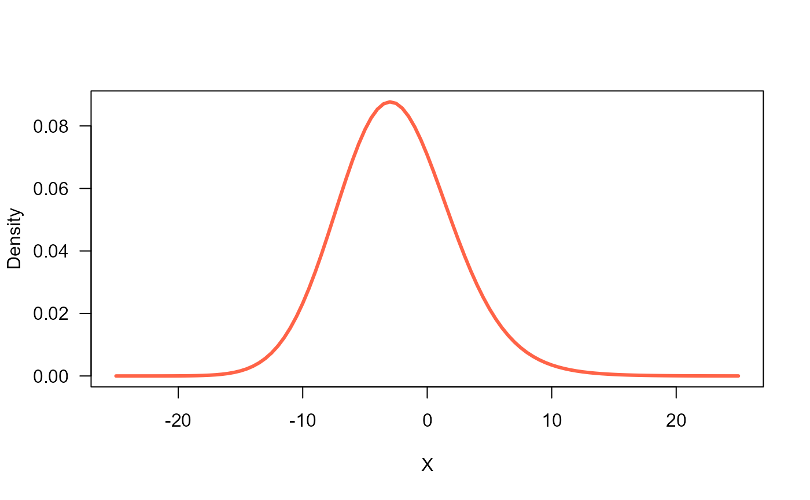
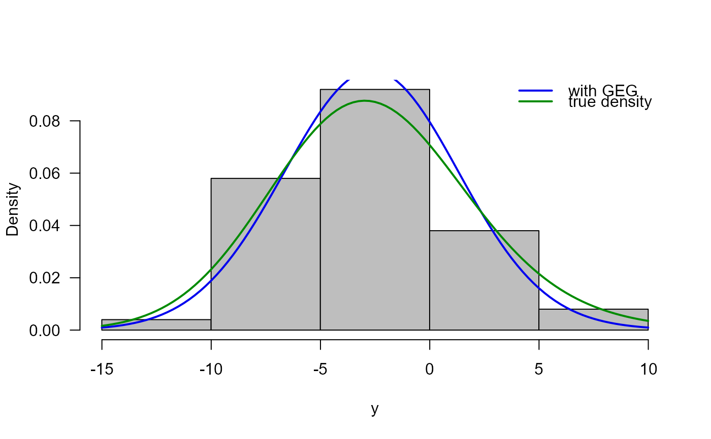

The function GEG() defines the Flexible Weibull distribution, a two parameter
distribution, for a gamlss.family object to be used in GAMLSS fitting
using the function gamlss().
Arguments
- mu.link
defines the mu.link, with "identity" link as the default for the mu parameter.
- sigma.link
defines the sigma.link, with "log" link as the default for the sigma.
- nu.link
defines the nu.link, with "log" link as the default for the nu.
- tau.link
defines the tau.link, with "log" link as the default for the tau.
Details
The Generalised exponential-Gaussian with parameters mu, sigma, nu and tau
has density given by
\(f(x | \mu, \sigma, \nu, \tau) = \frac{\tau}{\nu} \exp(w) \Phi \left( z - \frac{\sigma}{\nu} \right) \left[ \Phi(z) - \exp(w) \Phi \left( z - \frac{\sigma}{\nu} \right) \right]^{\tau-1}\)
for \(-\infty < x < \infty\). With \(w=\frac{\mu-x}{\nu} + \frac{\sigma^2}{2\nu^2}\) and \(z=\frac{x-\mu}{\sigma}\).
Examples
# Example 1 - without covariates ------------------------------------------
n <- 100
# The true parameters are:
true_mu <- -5
true_si <- 4
true_nu <- 2.5
true_ta <- 1
true_theta <- c(true_mu, true_si, true_nu, true_ta)
# Graphing the pdf
curve(dGEG(x, mu=true_mu, sigma=true_si, nu=true_nu, tau=true_ta),
from=-25, to=25, lwd=3, col="tomato")

# Simulating a random sample
set.seed(1234)
y <- rGEG(n=n, mu=true_mu, sigma=true_si, nu=true_nu, tau=true_ta)
# Estimating paramaters
library(gamlss)
#> Loading required package: splines
#> Loading required package: gamlss.data
#>
#> Attaching package: 'gamlss.data'
#> The following object is masked from 'package:datasets':
#>
#> sleep
#> Loading required package: gamlss.dist
#> Loading required package: MASS
#> Loading required package: nlme
#> Loading required package: parallel
#> ********** GAMLSS Version 5.4-3 **********
#> For more on GAMLSS look at https://www.gamlss.com/
#> Type gamlssNews() to see new features/changes/bug fixes.
mod <- gamlss(y ~ 1, family=GEG,
control=gamlss.control(n.cyc=1000, trace=TRUE))
#> GAMLSS-RS iteration 1: Global Deviance = 572.7969
res <- c(mu_hat=coef(mod, what="mu"),
sigma_hat=exp(coef(mod, what="sigma")),
nu_hat=exp(coef(mod, what="nu")),
tau_hat=exp(coef(mod, what="tau")))
# Comparing true vector and estimated vector
round(cbind(true_theta, with_GEG=res), digits=2)
#> true_theta with_GEG
#> mu_hat.(Intercept) -5.0 -10.71
#> sigma_hat.(Intercept) 4.0 6.04
#> nu_hat.(Intercept) 2.5 0.86
#> tau_hat.(Intercept) 1.0 4.07
# Histogram and two estimated densities
truehist(y, ylab="Density", col="gray", las=1)
curve(dGEG(x, mu=res[1], sigma=res[2], nu=res[3], tau=res[4]),
add=TRUE, col="blue2", lwd=2)
curve(dGEG(x, mu=true_theta[1], sigma=true_theta[2],
nu=true_theta[3], tau=true_theta[4]),
add=TRUE, col="green4", lwd=2)
legend("topright", lwd=2, bty="n",
legend=c("with GEG", "true density"),
col=c("blue2", "green4"))

# Example 2 - with covariates ---------------------------------------------
n <- 5000
# The true parameters are:
b0_mu <- -1
b1_mu <- 2
b0_sigma <- -2
b1_sigma <- 4
true_nu <- 0.5
true_ta <- 0.75
# The true theta vector
true_theta <- c(b0_mu, b1_mu, b0_sigma, b1_sigma, true_nu, true_ta)
# Simulating covariates
x1 <- runif(n, min=0.49, max=0.51)
x2 <- runif(n, min=0.49, max=0.51)
# Simulating a random sample
y <- rGEG(n=n,
mu = b0_mu + b1_mu * x1,
sigma = exp(b0_sigma + b1_sigma * x2),
nu = true_nu,
tau = true_ta
)
# The dataframe
datos <- data.frame(y=y, x1=x1, x2=x2)
# Estimating paramaters
# Using gamlss with our proposal
mod <- NULL
mod <- gamlss(y ~ x1,
sigma.fo = ~ x2,
family=GEG,
control=gamlss.control(n.cyc=10000, trace=TRUE))
#> GAMLSS-RS iteration 1: Global Deviance = 15868.51
#> GAMLSS-RS iteration 2: Global Deviance = 15868.51
#> GAMLSS-RS iteration 3: Global Deviance = 15868.51
param <- unlist(coefAll(mod))
res <- cbind(true_theta, with_gamlss=c(param[1:4], exp(param[5:6])))
round(res, digits=2)
#> true_theta with_gamlss
#> mu.(Intercept) -1.00 -0.87
#> mu.x1 2.00 2.14
#> sigma.(Intercept) -2.00 -2.52
#> sigma.x2 4.00 4.79
#> nu.(Intercept) 0.50 0.56
#> tau.(Intercept) 0.75 0.59